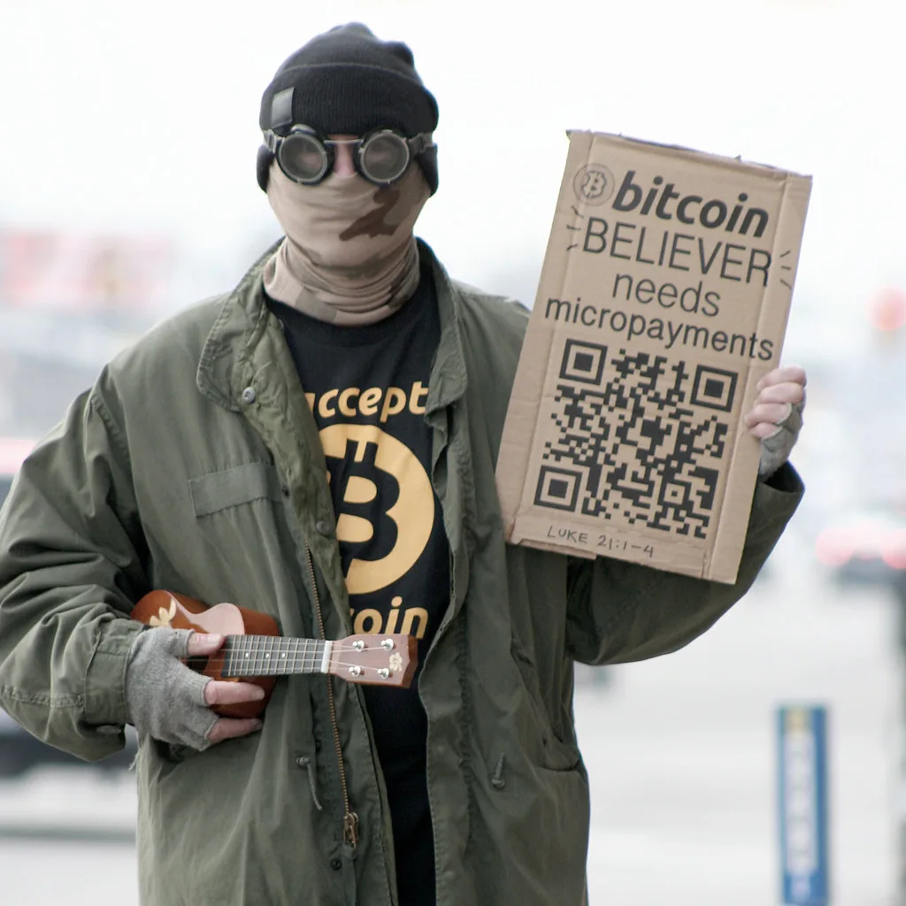

세계 최대 가상자산 거래소 바이낸스에서 벌어진 역대급 해킹 사건의 배후가 북한이라는 사실이 미국 수사당국에 의해 공식 확인됐다. 미 연방수사국(FBI)은 지난달 29일 바이낸스에서 발생한 60억달러 이상, 바이낸스 측 추산으로는 약 63억6000만달러(약 8조4000억원) 규모의 디지털자산 탈취 사건이 북한 정예 해킹조직 '트레이더트레이터(TraderTraitor)'의 소행이라고 밝혔다. 트레이더트레이터는 지난해 15억달러 규모의 바이비트 해킹 배후로 FBI가 이미 지목했던 조직이어서, 이번 발표로 북한의 가상자산 해킹 전력에 또 하나의 대형 사건이 추가됐다.
이번 해킹에서 가장 충격적인 대목은 속도다. 해커들은 바이낸스가 운영하는 10개 블록체인 네트워크에서 단 20분 만에 수십억달러 상당의 자산 대부분을 빼돌렸다. 거래소 보안 시스템이 이상 징후를 포착하고 대응에 나설 틈조차 주지 않을 만큼 치밀하고 빠르게 움직였다는 의미다. 이 짧은 시간 동안 세계 각지의 보안 담당자들과 거래소들이 자금 추적과 동결에 나서는 추격전이 동시에 펼쳐진 것으로 전해진다.
FBI는 발표에서 "트레이더트레이터 조직원들이 탈취한 자산을 주로 이더리움(ETH)으로 전환하는 정황을 포착했다"고 설명했다. 자금 동결을 피하기 위해 시세보다 높은 값을 치르면서까지 서둘러 이더리움으로 바꿔치기하는 '속도전'을 펼쳤다는 것이다. 탈취한 자산을 한 종류의 코인으로 그대로 보유하면 추적과 동결 위험이 커지는 만큼, 손실을 감수하고라도 자산 종류를 빠르게 바꿔 추적을 피하려 한 것으로 풀이된다. 다행히 바이낸스와 관련 기관들의 신속한 대응으로 탈취된 가상자산 가운데 상당 부분은 추가 유출 전에 동결된 것으로 알려졌다.
블록체인 분석업체들은 애초 범행 수법만으로도 북한 정부가 지원하는 해킹조직 라자루스 그룹, 즉 트레이더트레이터의 연루 가능성을 제기해왔다. 이번 FBI의 공식 확인으로 그 추정은 사실로 굳어졌다. 북한 해킹조직이 금융 당국과 거래소들의 감시를 피해 가상자산을 탈취하고 세탁하는 수법이 해를 거듭할수록 더 정교해지고 있다는 우려가 커지는 배경이다.

北 해킹조직의 가상자산 탈취는 올 한 해만의 일이 아니다. 북한은 2017년 이후 약 9년간 100건에 가까운 해킹을 통해 총 128억달러를 탈취한 것으로 추산된다. 특히 올해 한 해 탈취액만 74억달러에 달해, 전 세계 가상자산 해킹 피해액의 약 85%를 북한이 차지한다는 분석도 나온다. 탈취한 자금이 북한의 핵·미사일 개발 자금으로 흘러간다는 의혹이 꾸준히 제기돼온 터라, 국제사회의 경계감은 한층 높아지고 있다.
이번 사건을 계기로 가상자산 거래소들의 보안 체계를 전면적으로 재검토해야 한다는 목소리도 커지고 있다. 20분이라는 짧은 시간에 조 단위 자산이 빠져나간 사실 자체가, 아무리 큰 거래소라도 국가 차원의 해킹 역량 앞에서는 취약할 수 있다는 점을 보여줬다는 평가다. 각국 수사기관과 거래소 간 공조 체계를 더 빠르게 가동할 수 있는 구조를 갖춰야 한다는 지적이 뒤따른다.